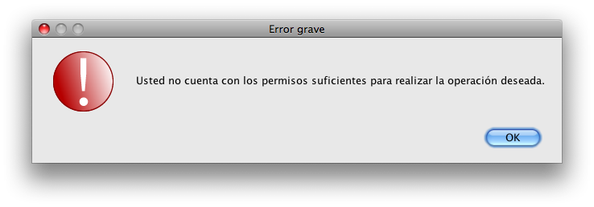

Manual de usuario
1. Sesiones de usuario
1.1 Iniciar sesión
Para iniciar sesión es necesario contar con una cuenta de usuario activa. Al iniciar sesión el programa reconoce automáticamente el nivel de privilegios del usuario y sólo le permitirá ejecutar aquellas funciones para las que está autorizado. A continuación se muestra la pantalla para iniciar sesión:

Mientras utiliza el sistema, puede que ocurran errores de permisos. Esto significa que usted está intentando realizar una operación para la que no tiene permisos suficientes. Cuando ocurra dicho error, se mostrará la siguiente pantalla:

1.2 Cerrar sesión
En caso de que
un diferente empleado quiera tener acceso a las funcionalidades del sistema, el usuario actual deberá cerrar su sesión y el nuevo empleado iniciar la suya. Cerrar la sesión significa cerrar la aplicación hasta que otro empleado con un usuario activo inicie sesión. Para cerrar una sesión vaya al menú Archivo / Cerrar sesión.
2. Administración de clientes
2.1 Dar de alta
Para dar de alta un empleado vaya al menú Archivo / Nuevo miembro... Deberá ver una pantalla como la que se muestra a continuación:

La forma se validará al momento de dar clic en el botón de Agregar. En caso de que exista algún error al llenar la forma, se le indicará para su corrección. Cuando usted selecciona México como país, la forma automáticamente desplegará la lista de estados de la República para que usted elija el apropiado. La aplicación mostrará pantallas de éxito o de error según sea el caso.
2.2 Buscar
La única forma de buscar a un cliente es por su número de identificación. La manera estándar de lectura de números de identificación es a través del lector de barras leyendo la credencial de cada miembro. La aplicación buscará al miembro en la base de datos de la sucursal local y en la información que se tenga sincronizada del resto de las sucursales. En caso de que el miembro sea local, se tendrá acceso a toda su información y se podrá modificar como sea necesario. Sin embargo, si se trata de un cliente externo, únicamente se podrá ver a qué sucursal pertenece y su fotografía. A continuación se muestra la pantalla de búsqueda de miembros, en el cuadro de texto deberá teclearse o leerse con el scanner de códigos de barras el número de identificación del cliente.

En caso de que el cliente no se haya encontrado localmente o en otra de las sucursales, se mostrará la siguiente pantalla:

Si el miembro existe en la base de datos se le mostrará una lista de acciones posibles para ese miembro como la que se muestra a continuación:

2.3 Actualizar información personal
asfdasfd a dfssdfa sadfasdf
2.4 Administrar fichas
asfdasfd a dfssdfa sadfasdf
2.5 Dar de baja
asfdasfd a dfssdfa sadfasdf
3. Administración de empleados
3.1 Dar de alta
asdfas sdfa adsf fdsa fdsaadfs
3.2 Buscar
asfdasfd a dfssdfa sadfasdf
3.3 Desactivar cuenta de usuario
asfdasfd a dfssdfa sadfasdf
3.4 Reactivar cuenta de usuario
asfdasfd a dfssdfa sadfasdf
3.5 Dar de baja temporal
asfdasfd a dfssdfa sadfasdf
3.6 Recontratar empleado
asfdasfd a dfssdfa sadfasdf
3.7 Dar de baja definitiva
asfdasfd a dfssdfa sadfasdf
3.8 Cambiar usuario o contraseña
asfdasfd a dfssdfa sadfasdf
3.9 Actualizar información personal
asfdasfd a dfssdfa sadfasdf
4. Administración de mesas
4.1 Dar de alta
asdfas sdfa adsf fdsa fdsaadfs
4.2 Cambiar mesa de juego
asfdasfd a dfssdfa sadfasdf
4.3 Dar de baja
asfdasfd a dfssdfa sadfasdf
5. Administración de tipos de juego
5.1 Dar de alta
asdfas sdfa adsf fdsa fdsaadfs
5.2 Dar de baja
asfdasfd a dfssdfa sadfasdf
6. Administración de sesiones de juego
7. Sincronización
(c) Copyright Alfredo Fernández Acuña (alfredofernandeza@gmail.com)